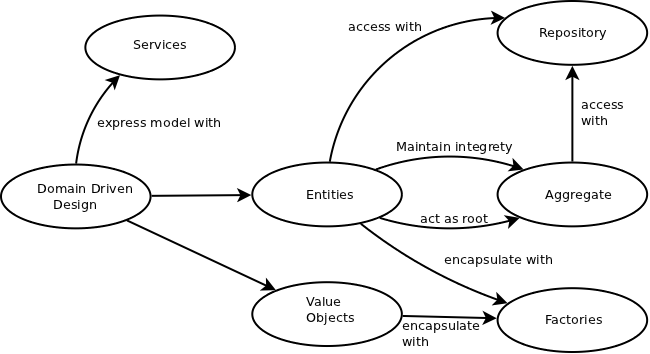

Technisch
Klasse, Package
Modul/Library
Deployment Unit
Lektion 2 - Microservices
Modularisierung
Fachlich
Konzept
Produkt
Organisatorisch
Team
Abteilung
Modularisierung
Warum modularisieren wir?
Beherrschung der Komplexität
Parallelsierung der Entwicklung
Auffindbarkeit von Code
Erleichterung der Wartung
Monolith
Schwergewichtiges Software-Artefakt
Hohe Anzahl fachlicher Komponenten
Einheitliche technische Basis
Eine Deployment Unit
Ein Prozess zur Laufzeit
Nicht grundsätzlich ein Anti-Pattern!

Probleme eines Monolithen
Hohe (technische) Kopplung zwischen Komponenten
Lange Build Cycles
Einzelne Bestandteile nicht unabhängig skalierbar
Verzögerte Auslieferung neuer Features
Hoher Wartungsaufwand
Mangel an Agilität und Innovation

Conway’s Law
Organizations which design systems […] are constrained to produce designs which are copies of the communication structures of these organizations.
1968
— Melvin Edward Conway
— Melvin Edward Conway
Conway’s Law
Barrieren in der Kommunikation → Brüche in der Software
Klassische Aufteilung
Fachseite
Entwickler
Datenbankspezialisten
Ops
Konsequenzen
Unrealistische Anforderungen
Keine Kontrolle über Daten
Wenig Details zu Fehlern
Wohin geht die Reise?

Microservices
Microservices sind ein Architekturmuster der Informationstechnik, bei dem komplexe Anwendungssoftware aus unabhängigen Prozessen komponiert wird, die untereinander mit sprachunabhängigen Programmierschnittstellen kommunizieren. Die Dienste sind weitgehend entkoppelt und erledigen eine kleine Aufgabe. So ermöglichen sie einen modularen Aufbau von Anwendungssoftware.
— wikipedia.de
Microservices

Merkmale
Ein Microservice…
…läuft in einem eigenen Prozess.
…wird über das Netzwerk angesprochen.
…kann unabhängig deployed, erweitert oder skaliert werden.
…repräsentiert einen Bounded Context der Fachdomäne.
…ist nicht an die Technologie anderer Services gebunden.
…wird nur von einem Team entwickelt.
…hat ein unabhängiges Datenmodell.
Aufbau

Kommunikation

Kommunikation

Herausforderungen
Verteiltes System
Orchestrierung
Resilienz
Konsistenz
Debugging
Monitoring und Logging
Netzwerk
Performance
Zuverlässigkeit
Potentieller "Technologiezoo"
Resilienz
Bulkhead
Angelehnt an Schiffsbau (Schotten)
Separierung einzelner Bereiche
Beispiel: Aufteilung des Thread Pools
Circuit Breaker
Angelehnt an Elektrotechnik (Sicherung)
Steuerung des Durchflusses
Geschlossen: Alle Request durchlassen
Offen: Alle Requests abweisen (→ Defaults)
Halb offen: Begrenzte Anzahl an Requests durchl.
Konsistenz
Klassische Transaktionen (ACID)
A tomicity: Atomare Durchführung von Änderungen
C onsistency: Konsistenzerhaltung
I solation: Isolation nebenläufiger Änderungen
D urability: Festschreibung der Änderungen
Two Phase Commit (2PC, XA)
ACID für verteilte Systeme
Phase 1: Commits vorbereiten
Phase 2: Commits durchführen
Pet Helland: "Grown-ups don’t use distributed transactions"
Gregor Hohpe: "Starbucks does not use two phase commit"
Konsistenz
CAP Theorem
C onsistency: Zeitliche Konsistenz
A vailability: Verfügbarkeit
P artition Tolerance: Toleranz gegenüber Netzwerkpartitionen
Nur 2 von 3 Eigenschaften möglich!

Konsistenz
CAP bei verteilten Systemen
Partitionstoleranz obligatorisch
Verfügbarkeit oder Konsistenz
Beispiel: Bestellsystem vs. Geldautomat
Meist BASE statt ACID
Konsistenz
CAP bei Microservices
Keine verteilten Transaktionen
Aggregate (DDD) bestimmt Konsistenzgrenze
Eventual Consistency
Fehlerbehandlung
Stateful Retry (erfordert Idempotenz)
Fachliche Kompensation

Self Contained System
Eigenständige Anwendung
GUI
Datenmodell
Logik
Persistenz
Lose Kopplung an andere Systeme
Integration bevorzugt über UI
Datenaustausch nur über APIs
Möglichst asynchrone Kommunikation
Entwicklung durch ein Team
Single Responsibility Prinzip
Kann aus Microservices bestehen

Architektur
Makro-Architektur
Wie viele Services brauchen wir?
Wie groß darf ein Service sein?
Wie schneiden wir die Services?
Wie sollen die Schnittstellen aussehen?
Welche Technologiestacks erlauben wir?
Wie setzen wir Authentifikation, Monitoring und Logging um?
Architektur
Mikro-Architektur
Wie sollte ein Service aufgebaut sein?
Welche Technologien nutzen wir im Detail?
Wie setzen wir Authorisierung um?
Domain Driven Design
Wie schneiden wir die Services?
Wie sollte ein Service aufgebaut sein?
Wie groß sollte ein Service sein?
Wie viele Services brauchen wir?
Domain Driven Design
Herangehensweise zur fachlichen Strukturierung einer Anwendung
Domänenmodell
Ubiquitious Language
Ausgangsbasis der Entwicklung
Klassifizierung enthaltener Elemente

Domain Driven Design: Elemente

Domain Driven Design: Bounded Context
Grenze innerhalb einer Domäne
Fachlichkeit
Datenmodell
Konsistenz
Organisation
Identifizierung
Clustering von Anforderungen (z.B. Use Cases)
Bestimmung von Abhängigkeiten
Domain Driven Design: Stategic Design
Kommunikationsbeziehungen und Machtverhältnisse zwischen Bounded Contexts
Separate Ways: Keine Integration
Open Host Service: Einseitige Bereitstellung von Schnittstellen
Conformist: Übernahme des fremden Modells
Anti-Corruption Layer: Adapter zu fremdem Modell
Customer-Supplier: Gleichberechtigte Aushandlung der Schnittstellen
Shared Kernel: Gemeinsame Verwendung eines Teilmodells
Domain Driven Design: Context Map
Visualisierung der Beziehungen
Domain Driven Design: Übung
Für den großen Parkhausbetreiber „JustParkIt“ soll ein System zur Ausgabe, Nutzung, Abrechnung und Rücknahme von Tickets und Dauerparkausweisen umgesetzt werden. Im Rahmen der Anforderungserhebung wurden bereits einige User Stories ermittelt.
Aufgaben:
Gruppieren Sie die User Stories nach fachlichen Domänen und benennen Sie die so entstandenen Bounded Contexts.
Identifizieren Sie die jeweils beteiligten Akteure sowie Abhängigkeiten zwischen den Kontexten.
Modellieren Sie einen Dauerparkausweis in den einzelnen Kontexten. Wo gibt es Gemeinsamkeiten, wo zeigen sich Unterschiede?
Entwickeln Sie eine Context Map und benennen Sie die Beziehungen (→ Patterns) zwischen den Kontexten.
Domain Driven Design: Übung
US-01: Als Kunde möchte ich mir an der Schranke ein Ticket ziehen, um ins Parkhaus einfahren zu können.
US-02: Als Kunde möchte ich an der Schranke meinen gültigen Dauerparkausweis nutzen, um ins Parkhaus einfahren zu können.
US-03: Als Parkhausbetreiber möchte ich eine Übersicht aller aktuell gültigen Dauerparkausweise pro Parkhaus online erhalten, um bei Bedarf weitere Ausweise nachbestellen zu können.
US-04: Als Kunde möchte ich mein bezahltes Ticket an der Schranke zurückgeben, um aus dem Parkhaus herausfahren zu können.
US-05: Als Kunde möchte ich an der Schranke meinen Dauerparkausweis nutzen, um aus dem Parkhaus herausfahren zu können.
Domain Driven Design: Übung
US-06: Als Parkhausbetreiber möchte ich einen Dauerparkausweis sperren können, um säumigen Zahlern den Zugang zu den Parkhäusern zu verwehren.
US-07: Als Kunde mit Dauerparkausweis möchte ich die im aktuellen Monat angefallenen Kosten online einsehen, um eine Übersicht über meine Ausgaben zu erhalten.
US-08: Als Parkhausbetreiber möchte ich elektronische Zahlungen am Automaten an einen Zahlungsdienstleister weiterleiten, damit sich dieser um die Abwicklung kümmert.
US-09: Als Pförtner möchte ich die Schranke mit einem auf dem Dauerparkausweis aufgedruckten Code öffnen können, falls der Chip auf dem Ausweis selbst nicht mehr lesbar ist.
US-10: Als Kunde möchte ich einen Dauerparkausweis online für ein weiteres Parkhaus des Betreibers freischalten, um dort künftig mein Auto abstellen zu können.
Domain Driven Design: Übung
US-11: Als Parkhausbetreiber möchte ich online eine Statistik über die durchschnittliche Parkdauer an einem Standort erhalten, um meine Angebote besser zuschneiden zu können.
US-12: Als Kunde möchte ich ein Ticket am Automaten bar bezahlen können, um anschließend aus dem Parkhaus herausfahren zu können.
US-13: Als Kunde möchte ich ein Ticket am Automaten mit Kreditkarte bezahlen können, um anschließend aus dem Parkhaus herausfahren zu können.
US-14: Als Kunde möchte ich die verschlossene Eingangstür zum Parkhaus mit meinem Ticket oder Dauerparkausweis öffnen können.
US-15: Als Kunde möchte ich meinen Dauerparkausweis monatlich per Kreditkarte bezahlen, um nicht in Verzug zu geraten.
US-16: Als Kunde möchte ich die hinterlegte eMail-Adresse zu meinem Dauerparkausweis ändern, um zeitnah über neue AGB benachrichtigt zu werden.
API Design
Wie sollen die Schnittstellen aussehen?
API Design: Einflussfaktoren
Öffentlich vs. intern
Änderbarkeit
Technologien
Generisch vs. client-spezifisch
Wartungsaufwand
Verständlichkeit
Information Hiding
Fein- vs. grobgranular
Datenmenge
Anzahl Calls
Kaskadierung
Blocking vs. non-blocking
Technologien
Prozessablauf
API Design: Prinzipien
Domänenorientierung
Lose Kopplung
Idempotenz
Abwärtskompatibilität oder Versionierung
API Design: Technologien
REST
Representational State Transfer
Architekturstil
Ressourcenorientiert
Hypermedia
OpenAPI
SOAP
Ursprünglich: Simple Object Access Protocol
Nachrichtenformat (XML)
Dokumenten- und funktionsorientiert
WS-* Erweiterungen
WSDL
API Design: Technologien
Binäres RPC
Funktionsorientiert
Hohe Performance
Technologien: gRPC, Apache Thrift
Messaging
Austausch von Nachrichten über Broker
Lose Kopplung
Technologien: Apache ActiveMQ, Apache Kafka
API Design: Microservice API Patterns
Our Microservice API Patterns (MAP) distill proven solutions to recurring service interface design and specification problems such as finding well-fitting service granularities, promoting independence among services, or managing the evolution of a microservice API.
— microservice-api-patterns.org
API Design: Microservice API Patterns
Aktuell in Entwicklung befindlich
Fragestellungen
Wie viele Schnittstellen sollten als API verfügbar sein?
Wie kann eine möglichst lose Kopplung erreicht werden?
Welche Daten sollten ausgetauscht werden und wie oft?
Wie sollten Nachrichten aussehen?
API Design: Microservice API Patterns

API Design: API Description (Foundation)
Kontext
Bereitstellung einer neuen API
Verwendung nicht allgemein bekannt
Problem
Wie kann die Nutzung der API explizit dokumentiert werden?
Wie kann die Dokumentation mit anderen Spezifikationen verbunden werden?
Lösung
Bereitstellung einer strukturierten API Beschreibung
Umsetzung: OpenAPI (REST), JSON API (REST), WSDL (SOAP)
API Design: Pagination (Structure)
Kontext
Bei Abruf eines Service werden viele Daten übermittelt
Client benötigt nur einen Teil davon
Problem
Wie kann der Abruf so eingeschränkt werden, dass der Client nur einen Teil der Daten erhält?
Lösung
Auslieferung der Daten in Chunks
Übermittlung eines Links zu weiteren Daten
Umsetzung: Hypermedia (REST)
API Design: API Key (Quality)
Kontext
Service wird per Aufruf bezahlt
Verwendung eines Service muss einem Benutzer zugeordnet werden können
Einsatz eines Auth Frameworks zu umständlich
Problem
Wie kann ein Service Benutzer erkennen?
Lösung
Übermittlung eines API Keys (Token) durch den Benutzer
Umsetzung: HTTP Header, Cookie, Query Parameter
API Design: Version Identifier (Evolution)
Kontext
API erfährt Breaking Changes
Alte Clients müssen weiterhin unterstützt werden
Problem
Wie können alte und neue API zeitgleich existieren?
Lösung
Versionierung der API
Umsetzung: URI, Payload
API Design: OpenAPI
Spezifikation zur Beschreibung von REST APIs
Vorläufer: Swagger
Contract First vs. Code First
YAML oder JSON
Java Annotations
API Design: OpenAPI
YAML
openapi: 3.0.0
info:
title: Sample Resource
description: Sample API to demonstrate OpenAPI annotations.
version: 1.0
servers:
- url: http://api.anderscore.com.com/v1
description: anderScore public API
- url: http://staging-api.anderscore.com
description: anderScore staging environment
paths:
/users:
get:
summary: Get all users.
description: Get all persisted anderScore users.
responses:
'200': # status code
description: A JSON array of user names
content:
application/json:
schema:
type: array
items:
type: stringAPI Design: OpenAPI
Annotations
@OpenAPIDefinition (info =
@Info(
title = "Sample Resource",
version = "1.0",
description = "Sample API to demonstrate OpenAPI annotations",
license = @License(name = "Apache 2.0", url = "http://foo.bar"),
contact = @Contact(url = "http://www.anderscore.com", name = "Daniel Krämer", email = "daniel.kraemer@anderscore.com")
)
)
public class SampleResource {
@GET
@Operation(summary = "Get all users", description = "Get all persisted anderScore users")
public Response getUsers() {
// ...
}
}Der Weg zur Makro-Architektur
Fachlicher Schnitt der Microservices nach Domain Driven Design
Ermittlung der Bounded Contexts
Ableiten der Context Map
Bestimmung der Qualitätsanforderungen und Einflussfaktoren
Auswahl geeigneter Technologien
Definition der APIs
Orientierung an Use Cases und DDD Services
Verwendung von Patterns
Dokumentation
Übung
Implementieren Sie den
AbrechnungService:Erstellen Sie einen REST Microservice mit dem Spring Boot Initializr.
Stellen Sie eine API bereit, mit der ein Parkticket vom Automaten als bezahlt deklariert werden kann.
Sehen Sie eine API vor, mit welcher sich die erfolgte Bezahlung eines Tickets überprüfen lässt.
Erstellen Sie den
ZugangskontrollServiceGenerieren Sie einen weiteren Microservice.
Bieten Sie der Schranke eine API zum Prüfen eines Tickets an. Das Ergebnis kann "EXIT GRANTED" oder "EXIT DENIED" lauten.
Fragen Sie zur Ermittlung des Ergebnisses die Bezahlung beim
AbrechnungServiceab.Was passiert, wenn der
AbrechnungServicenicht verfügbar ist? Wie gehen Sie damit um?
Testen Sie ihre Anwendung mit cURL oder SoapUI.
Bonus: Dokumentieren Sie die APIs mit OpenAPI.
Bonus: Implementieren Sie auch den Rest der Parkhausanwendung!
Übung
Context Map
Mikro-Architektur
Architektur einzelner Services
Verantwortung des jeweiligen Teams
Vorgaben des Architekten
Erlaubte Technologien und Frameworks
Schnittstellen
Mögliche Herangehensweise: Domain Driven Design
Mikro-Architektur
Hexagonale Architektur
Synonyme: Ports and Adapters, Zwiebelarchitektur
Strikte Trennung von Fachlichkeit und Technik
Dependency Inversion (DIP)
Domain: Daten und Geschäftslogik
Service: Orchestrierung der Geschäftslogik
Infrastruktur: Externe Kommunikation

Mikro-Architektur
Hexagonale Architektur
Ports
Anknüpfungspunkte
Definition durch innere Schichten
Adapters
Konterpart der Ports
Implementierung durch äußere Schichten
Aktiv vs. passiv
Ausblick: Microservices im Unternehmenseinsatz
Stack
Spring Boot oder MicroProfile (z.B. Quarkus)
REST + OAuth oder Apache Kafka
Resilienz
Circuit Breaker
Client-side Load Balancing
Paketierung und Deployment
Executable jar
Docker
Kubernetes oder Docker Swarm
Zentrales Monitoring und Logging
Prometheus, Grafana
ElasticSearch, LogStash, Kibana
Zusammenfassung Microservices
Form der Modularisierung
Herausforderungen eines verteilten Systems!
Schnitt mittels Domain Driven Design
Abgrenzung mittels Bounded Contexts und Context Map
Vielseitige Integrationsmöglichkeiten
Microservice API Patterns